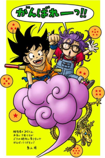

Akira Toriyama (鳥山 明, Toriyama Akira) es un dibujante de manga y diseñador de personajes japonés. Es conocido principalmente por sus obras Dr. Slump y Dragon Ball y por el diseño de personajes de las sagas Dragon Quest y Chrono Trigger. Sus principales influencias fueron Astroboy de Osamu Tezuka, 101 Dálmatas de Walt Disney y, principalmente, Viaje Al Oeste, de Wu Cheng'en. También, se basó en la leyenda china del Rey Mono.
El popular creador de Bola de Drac neix l'abril de 1955. Va entrar el 1974 a l'Escola Superior Industrial d'Aichi per estudiar disseny gràfic. En acabar els seus estudis va tenir un problema en tenir una demanda feta per USA Three Company per violar drets d'autor. Va ser contractat immediatament per una empresa de publicitat a Nagoya. Allí va treballar durant tres anys però estava molt avorrit i la seva relació amb els seus caps va arribar a convertir-se en alguna cosa desagradable. Per tant, va decidir retirar-se i dedicar-se al manga. La seva vida de “mangaka” va començar amb una publicació en la Weekly Shonen Jump de Shueisha. Més tard crearia moltes històries que també serien publicades en aquesta revista i, posteriorment, recollides en toms. Gràcies als seus populars personatges, Toriyama va ser immensament popular al Japó i al món durant la dècada dels anys 1990. En la primera dècada del segle XXI la seva fama ha decaigut a causa del menor èxit de les seves produccions més recents.Al Japó, però, continua sent una figura pública i encara viu a Aichi amb la seva dona i fills, on la seva fama li ha causat alguns problemes, per exemple, cada vegada que hi ha rumors que farà alguna aparició a Tòquio, l'oficina de governació es preocupa perquè en general multituds de fans s'ajunten prop de casa per observar sortir i, fins i tot, l'acompanyen en caravana fins a l'aeroport.Malgrat la seva fama, en general, a Toriyama no li agrada l'exposició als mitjans de comunicació col·lectiva. Són molt rares les ocasions en què algun periodista li ha aconseguit fer una entrevista o pres una foto per un diari estranger.
El salt ala fama va arribar amb Dr. Slump, que es va publicar en l'esmentada revista entre 1980 i 1984. Gràcies a ella va rebre el 1981 el Premi de Manga atorgat per l'editorial Shogakukan. L'acceptació del manga va ser massiva i, menys d'un any després de la seva aparició, el 8 d'abril de 1981, es va estrenar el primer episodi de la sèrie d'animació. En total, es van recopilar 18 volums de màniga (40 a Espanya, publicats per Planeta de Agostini) i la sèrie de televisió va sobrepassar els 240 episodis, arribant al seu final el 19 de febrer de 1986. Dr. Slump narra les aventures absurdes del professor Sembei Norimaki i de la seva creació, un robot amb forma de nena de 13 anys anomenat "Arale", i altres habitants d'un estrany lloc anomenat Vila Pingüí.
|  |
La sèrie que faria passar a la història a Akira Toriyama dins i fora de Japó, al punt d'haver arribat a ser el manga més conegut del món, va ser Bola de Drac. Toriyama havia escrit una història curta cridada Dragon Boy, abans d'escriure Dr. Slump. Doncs bé, Bola de Drac és la reelaboració de Drac Boy i el seu argument consisteix en les aventures de Son Goku i els seus amics, enmig de la recerca monumental de les set boles màgiques, on la unió d’aquestes boles pot invocar la presència del gran déu drac, Xeron, que pot concedir un desig a la seva invocador. La fórmula de buscar esferes, enfrontar-se a perills i, finalment, demanar el desig es repeteix incansablement al llarg dels 42 llibres de Dragon Ball que es van arribar a publicar. Més enllà de l'acceptació aconseguida amb la publicació del manga, el veritable èxit va venir quan les històries de Dr. Slump, i Dragon Ball es van convertir en sèries de dibuixos animats. Aquestes van aconseguir un enorme nivell d'audiència; particularment Bola de Drac, que va generar una quantitat massiva de mercaderia (roba, videojocs i tota mena de joguines al·lusius als personatges, tant herois com dolents). La gran popularitat va aconseguir pràcticament a tots els països on es va emetre i va obtenir els majors nivells d'audiència. Bola de Drac va acabar convertint-se en un fenomen cultural: per exemple, frases com "he de augmentar la meva Ki" es van tornar populars durant els anys 1990, fent al·lusió a diàlegs o situacions comunes en la sèrie. La sèrie animada de Bola de Drac Z (el nom que va rebre la versió televisada una vegada que Son Goku es va fer adult) ha estat traduïda a l'espanyol (Hispanoamèrica i Espanya), català, basc, gallec, anglès, francès, italià, portuguès i a altres idiomes. La sèrie elaborada per la companyia Shueisha va concloure en 1996 i fins a aquest any va ser emitida de 7.00 pm a 7.30 pm per la cadena Fuji Telecasting, del Japó.